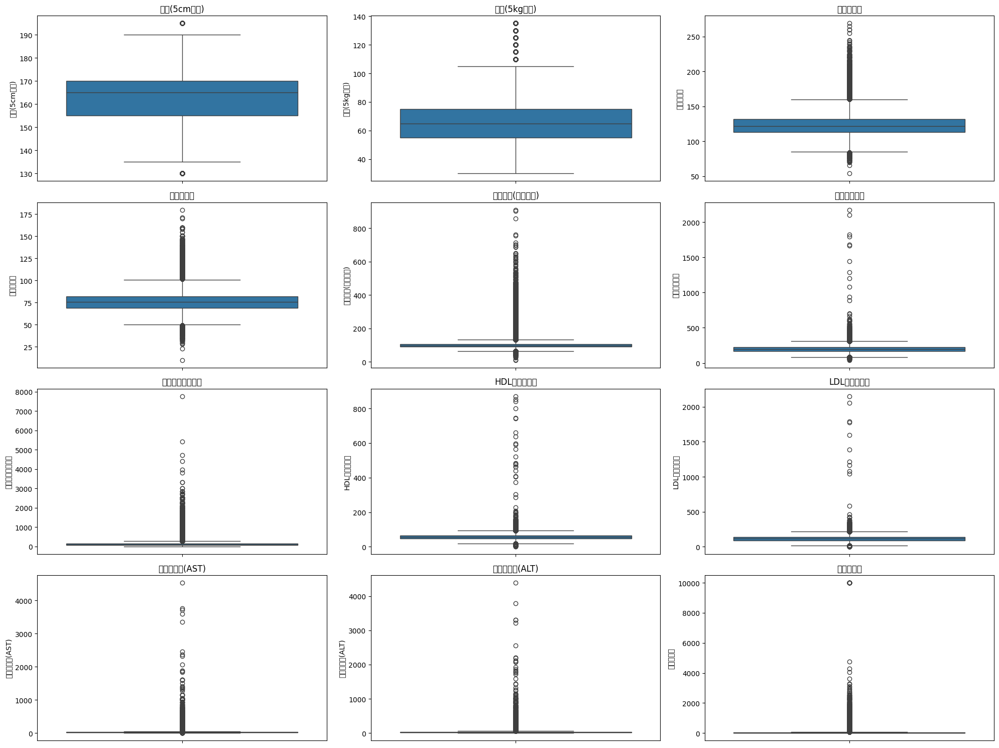
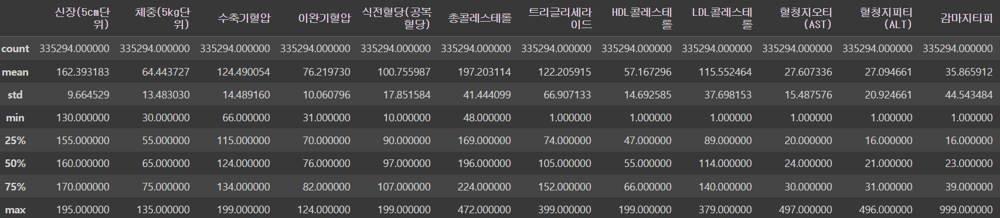
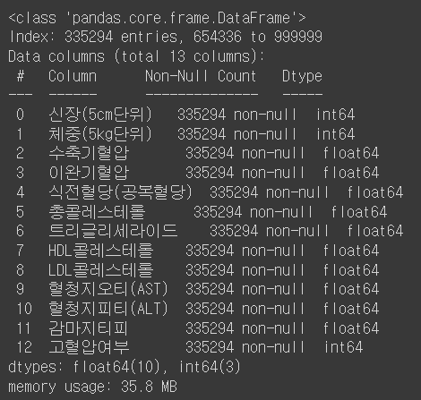
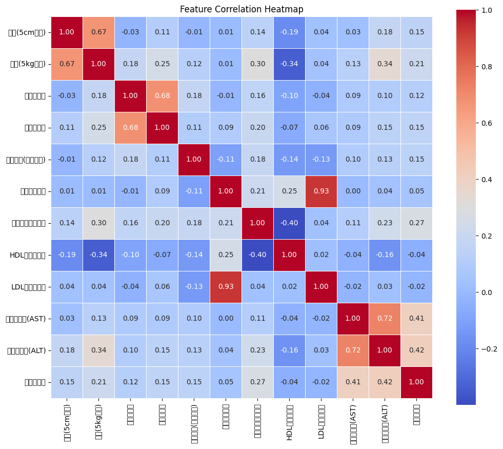
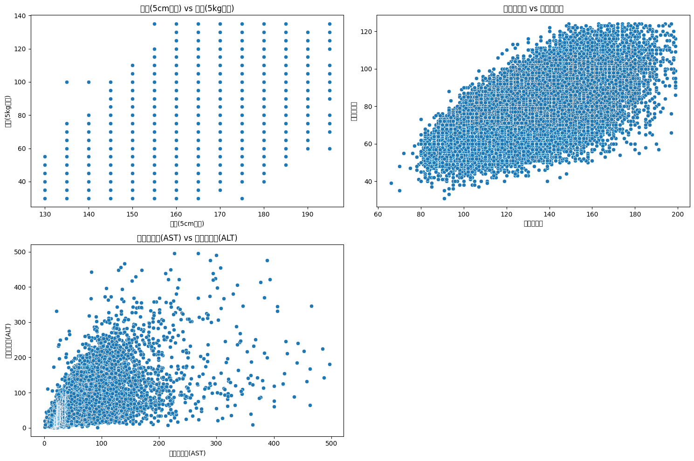
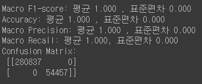

건강검진 데이터로 혈압을 예측하는 이유는 여러 가지가 있다. 혈압은 보통 초기에 증상이 없기 때문에 정기적인 혈압 측정을 통해 질병 발생 위험을 초기에 예측하고 대응할 수 있다. 또한, 고혈압은 심장병이나 뇌졸중 등의 심각한 병의 발생 위험을 높일 수 있기 때문에 고혈압 예측은 예방에 중요한 역할을 한다.
이 페이지는 건강검진 데이터를 분석하여 고혈압 여부를 정확하게 예측하기 위한 과정과 결과를 설명한다. 고혈압은 심혈관 질환의 주요 위험 요인 중 하나로, 정확한 예측과 조기 예방이 중요하다. 이를 위해 머신러닝 기법을 사용하여 데이터를 분석하고 모델을 구축한 과정을 소개할 것이다.
① 데이터 전처리
데이터 분석 전, 주어진 데이터를 상세히 살펴보았다. 초기 데이터셋에서는 많은 결측치와 고혈압 여부에 영향을 미치지 않는 특성들이 존재했다. '기준년도', '가입자일련번호', '시도코드', '성별', '연령대코드(5세단위)', '허리둘레', '시력(좌)', '시력(우)', '청력(좌)', '청력(우)', '혈색소', '요단백', '혈청크레아티닌', '흡연상태', '음주여부', '구강검진수검여부', '치아우식증유무', '치석' 등의 feature를 제거하여 데이터를 정리했다.
또한, 각 열의 데이터 분포를 시각적으로 확인하기 위해 박스플롯을 이용했다.박스플롯을 통해 이상치를 확인할 수 있다.

데이터에는 수축기혈압 200 이상, 이완기혈압 125 이하 또는 30 미만, 식전혈당(공복혈당) 200 이상, 총콜레스테롤 500 이상, 트리글리세라이드 1000 이상, HDL콜레스테롤 200 이상, LDL콜레스테롤 500 이상, 혈청지오티(AST) 500 이상, 혈청지피티(ALT) 500 이상, 감마지티피 1000 이상 등의 이상치가 존재했다. 이에 해당하는 데이터 행들을 제거하고 결측치를 처리하기 위해 categorical 변수는 최빈값, numeric 변수는 중앙값으로 채웠다. 또한, 고혈압 여부를 판단하는 열을 추가했다. 수축기 혈압이 140 이상이고 이완기 혈압이 90 이상인 경우를 고혈압으로 정의하고, 이를 기준으로 고혈압 여부를 나타내는 열을 생성했다. 고혈압일 경우는 1, 고혈압이 아닐 경우는 0으로 지정했다.
데이터에는 수축기혈압 200 이상, 이완기혈압 125 이하 또는 30 미만, 식전혈당(공복혈당) 200 이상, 총콜레스테롤 500 이상, 트리글리세라이드 1000 이상, HDL콜레스테롤 200 이상, LDL콜레스테롤 500 이상, 혈청지오티(AST) 500 이상, 혈청지피티(ALT) 500 이상, 감마지티피 1000 이상 등의 이상치가 존재했다. 이에 해당하는 데이터 행들을 제거하고 결측치를 처리하기 위해 categorical 변수는 최빈값, numeric 변수는 중앙값으로 채웠다. 또한, 고혈압 여부를 판단하는 열을 추가했다. 수축기 혈압이 140 이상이고 이완기 혈압이 90 이상인 경우를 고혈압으로 정의하고, 이를 기준으로 고혈압 여부를 나타내는 열을 생성했다. 고혈압일 경우는 1, 고혈압이 아닐 경우는 0으로 지정했다.
  또한, 데이터의 기술통계량을 확인하고 결측치가 모두 처리되었음을 확인했다.

다음으로는 데이터의 feature들 간의 관계를 heatmap을 통해 볼 수 있다.
히트맵을 통해 신장(5cm단위)와 체중(5kg단위), 수축기혈압와 이완기혈압, 혈청지오티(AST)와 혈청지피티(ALT)의 관계가 높게 나왔다.
더 깊게 변수 간에 어떤 상관계수를 갖는지 확인하기 위해 산점도를 그려보았다.

세 산점도는 모두 변수간에 양의 상관관계를 가진다.
② 모델 선택 및 머신러닝 과정
분류 모델로는 XGBoost를 선택했다. XGBoost는 속도가 빠르고 뛰어난 성능을 보이는 decision tree 기반의 앙상블 모델로, 정형 데이터(table 데이터)에서 효과적으로 사용된다. 사용된 독립 변수로는 신장(5cm 단위), 체중(5kg 단위), 수축기혈압, 이완기혈압, 식전혈당(공복혈당), 총콜레스테롤, 트리글리세라이드, HDL콜레스테롤, LDL콜레스테롤, 혈청지오티(AST), 혈청지피티(ALT), 감마지티피가 포함되고 고혈압 여부를 종속변수로 선택하여 이 모델을 사용하여 예측하고, 평가 지표로는 macro f1-score, accuracy, macro precision score, macro recall score를 각각 평균과 표준편차를 계산하여 제시했습니다.
③ 실험결과

주어진 데이터셋에서 XGBoost 모델은 매우 뛰어난 성능을 보였다. Macro F1-score, Accuracy, Macro Precision, Macro Recall 모두 1.000으로, 모델이 고혈압과 비고혈압을 모두 정확하게 분류했음을 나타낸다. 하지만 데이터의 양이 매우 크고 불균형한 경우, 모델의 과적합 문제에 주의해야 한다. 따라서 추가적인 데이터나 모델 세부 조정이 필요하다. 주어진 데이터는 양이 100만이 넘어 매우 크다 보니 overfitting이 일어난 것 같다.